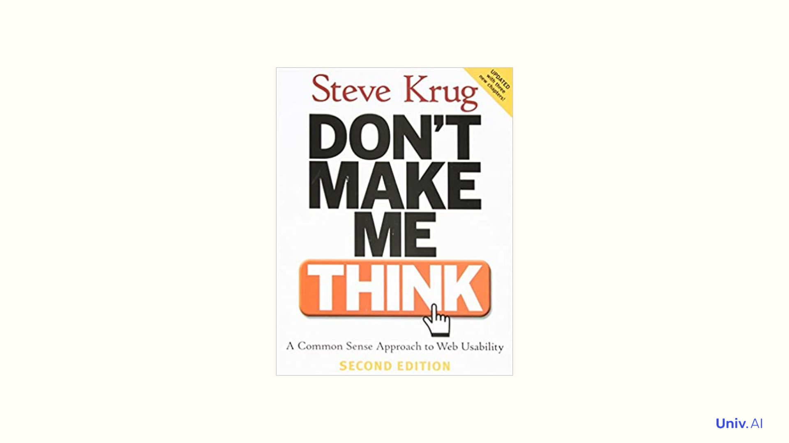

Box’s Loop is a build-compute-critique-repeat cycle for probabilistic modeling, formalized by statistician George Box. It applies to the scientific method, recommendation…
Defines cumulative distribution functions, probability mass functions, and probability density functions with coin-toss examples. Covers the Uniform and Bernoulli…
Simulates the 2012 US presidential election using Bernoulli coin flips for each state based on PredictWise probabilities. Introduces the Binomial distribution, the CLT’s…
Three ways to think about probability: symmetry, models, and long-run frequency, illustrated with coin-flip simulations. Covers the rules of probability, random variables…
A Three.js demonstration showing Earth’s rotation with the Modern theme.
Analyzes historical data on how the sitting president’s party performs in congressional elections. Uses pandas for data wrangling and visualization to explore partisan…
The Law of Large Numbers says the sample average converges to the true mean as sample size grows. We illustrate this with coin flips and connect frequentist sampling…

Good visualizations frame data as a story, using annotations and conventions so the audience doesn’t have to think. We walk through Financial Times COVID vaccine charts as…